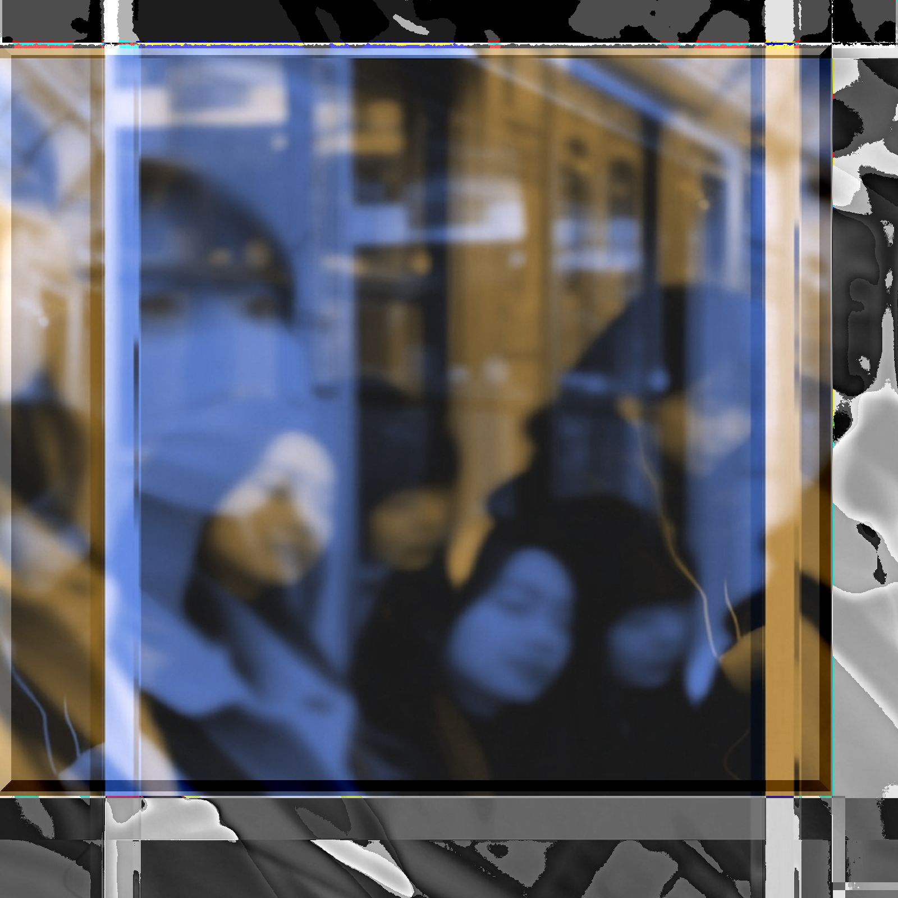

音移転換 metathesis
lyrics
右のエンジン 火を吹いた
左の翼が落っこちた
ミサイルになって飛んでった
操縦不能 操縦不能
いまの時代は ドローンだ
ハネはいくつ回ってんだ
二枚の翼じゃ 時代遅れだ
規制を強化 寄生を強化
今は変わる だから
過去も 変わってる
明日にわかる だから
もう わかってる
余計なことより オーケーで
心配いらない ダイジョウブ
雰囲気も 今じゃ雰囲気で
シダラナイ から だらしない
種をネタとか言ってみたり
アボカドなのか アボガドなのか
新たな あたらしい日々を
シュミレーションしてシミュレーションする
グラサンだっけ サングラスは
ビビンバのつぎは ピビンパなのか
今は変わる だから
過去も変わってる
明日にわかる だから
もうわかってる
余計なことより オーケーで
心配いらない ダイジョウブ
優しさは 優しさだ
それに野菜も大事だ
弱いものイジメはダメだ
大事なものが 僕にもあるんだ
今は変わる けれど
僕ら わかってる
明日は変わる だから
もう変わりはじめてる
余計なことより オーケーで
心配いらない ダイジョウブ
余計なものなど 多分ないよね
心配はあるけど ダイジョウブ
notes
音位転換（metathesis）って、音の順番が入れ替わる現象のことらしい。フンイキがフインキになったりするやつで意味はだいたい同じまま、形だけがズレていく。
逆に意味が変わっていくモノもあるよね。「エグい」とかさ。
とにかく言葉なんてのは、正しさよりもだいたい通じるかどうかで物事は進んでくわけで。それに、なんでもかんでも「ちがう」なんて言ってたら、めんどくせー奴だなって思われちゃう。任せてしまうことも大事。
「つまり、それって価値観のアップデートによるイノベーションでデシャップがウェルビーイングするサステナビリティで。エビデンスのアヒージョがプライマリーバランスで…。」
オーケー。オーケー。ダイジョウブ。うん、すべったって死ななきゃ大丈夫だぜ。えっ、位と移が違うって？原文ママって知らないの？
というよりさ、その「規制」って一体誰のため？上手いこと言ってるけど、転がすだけのお前のためじゃねーの？つまらないお土産なんて要らないよ。それにお前のためになんて結局ならないからな。騙されてんぞ。